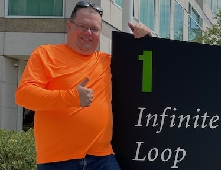

Welcome!

Welcome to my digital CV, my name is Claude Houle, I am a Montreal-based software developer with 20+ years’ experience.
I started in enterprise Java back end (Mediagrif, Compuware/Morgan Stanley, Accovia) building distributed systems and core platforms, and eventually transitioned to iOS in 2010, then served as mobile architect and lead at Spiria and Appcom, creating shared frameworks, establishing CI/CD, and mentoring high-performing teams.
Currently Lead iOS at Poka, elevating quality and productivity, pioneering visionOS with an Apple-recognized prototype (Vision Pro Dev Kit; day-one launch), and championing testing, tooling, and continuous learning.
1Goals
I consider myself a technology enthusiast, and my goal is to develop software solutions that enhance the lives of end users through meticulously designed applications. I believe that mobile phones and tablets, particularly Apple’s devices, serve as the ideal platforms for delivering such software.
I am committed to continuously refining my skills by exploring new patterns, paradigms, and technologies. My goal is to consistently enhance my capabilities as a developer, striving to improve upon my performance from the previous week or month.
I believe in engaging early with product discovery and design to translate user needs and business goals into clear, testable requirements. I enjoy partnering with product managers and designers to shape scope, validate assumptions with data and prototypes, and propose pragmatic, high‑impact solutions that balance technical feasibility, UX quality, and time‑to‑value. This product‑minded approach aligns engineering work with measurable outcomes and reduces risk through iterative delivery.
Additionally, I have been fortunate to receive mentorship from exceptional software developers early in my career. In the past 5 to 7 years, I have taken on the role of mentor myself, guiding the next generation of software engineers to enhance their skills and professionalism.
2Technologies
Here’s a curated overview of the technologies I use to ship production software. It highlights deep expertise across Apple platforms (iOS, visionOS, macOS) with Swift/Objective‑C, grounded by prior Java/Kotlin experience and supporting infrastructure. To keep the terminology digestible, each section includes short, high‑level descriptions and notes on where my practical depth lies.
2.1Programming Languages
- Swift — Apple’s modern, safe, and performant language for iOS, macOS, watchOS, tvOS, and visionOS.
- Objective-C — Apple’s Legacy language for developing on Apple’s platforms.
- Java
- Kotlin — A concise, modern JVM language used primarily for Android and server-side development.
2.1.1Secondary Languages
Other languages & technologies that I have worked with over the years:
- C/C++
- Python
- JavaScript / TypeScript
- SQL
2.2Operating Systems
- iOS
- visionOS
- watchOS
- tvOS
- macOS
- Linux (Debian and derivatives, like Ubuntu and Mint)
- Android
2.3Libraries & Frameworks
A non-exhaustive list of frameworks I’m proficient with and that remains relevant.
2.3.1Apple Ecosystem
- SwiftUI — Declarative UI framework for building interfaces across Apple platforms.
- UIKit — Imperative UI framework for iOS; extensive experience with programmatic Auto Layout.
- Combine — Reactive framework for handling asynchronous events and data streams.
- RxSwift / RxCocoa — Reactive programming library for composing asynchronous and event-based code.
- Core Data — Object graph and persistence framework for data modelling and storage.
- SwiftData — Modern, Swift-first persistence layers built on Core Data concepts.
- Core Location — Location and geofencing services for device positioning.
- MapKit — Native mapping and annotations for location-aware apps.
- AVKit — High-level media playback UI components.
- AVFoundation — Low-level audio/video processing, capture, and composition.
- Core Image — GPU-accelerated image processing and filters.
- Core Animation — High-performance animations and compositing.
2.3.2Java Ecosystem
- Spring Framework / Spring Boot — Enterprise application framework and opinionated bootstrapping for microservices.
- Hibernate — ORM for mapping Java objects to relational databases.
- Apache Tomcat — Lightweight servlet container for Java web applications.
- Apache Lucene — Full-text search library for indexing and retrieval.
- JBoss (WildFly) — Java EE application server for enterprise deployments.
- Liquibase — Database schema change management and versioning.
- Log4j — Logging framework for configurable, granular application logs.
- Apache Maven — Build automation and dependency management.
- Apache Ant — Scriptable build tool for Java projects.
- Apache ActiveMQ — Message broker for asynchronous messaging patterns.
- J2EE (JDBC, JTA, EJBs) — Enterprise standards for persistence, transactions, and components.
- JUnit — Unit testing framework for Java.
- Mockito — Mocking framework for isolated unit tests.
2.3.3RDBMS
Foundational database administration and usage:
- PostgreSQL — Advanced open-source relational database with strong SQL and extensions.
- MySQL — Widely used open-source relational database for web and application workloads.
- MariaDB — Community-driven fork of MySQL with performance and compatibility focus.
2.4Testing
I’m a firm believer that unit tests are an integral part of a healthy codebase.
- XCTest — Native unit testing framework for Swift and Objective-C.
- XCUITest — UI testing for end-to-end user flows in Apple-platform apps.
- Swift Testing — Modern, Swift-first testing framework for improved ergonomics and structure.
- SwiftyMocky — Code generation for protocol-based mocks in Swift.
- Snapshot Testing — Visual regression testing by comparing rendered UI snapshots.
- Nimble — Expressive matcher framework for readable test assertions.
2.4.1Snapshot Tests vs. Xcode Previews
Xcode Previews provide immediate, design-time feedback, allowing developers to see changes in real time and minimize the feedback loop. Snapshot tests operate on a longer cycle but are essential for catching visual regressions as the product evolves. I leverage both by using a lightweight approach to convert SwiftUI previews into snapshot tests with minimal code, combining rapid iterations with robust regression protection.
2.4.2XCUITest
Valuable for validating end-to-end behaviour before App Store releases, but inherently more fragile than unit tests. With careful isolation and robust selectors, they help reduce production defects.
2.4.3Code Coverage
Coverage is a useful signal—not a goal in itself. Pursuing 100% often has diminishing returns. In my experience, ~75% coverage correlates with strong stability and infrequent severe defects reaching users.
2.5Patterns & Principles
- MVVM (Model–View–ViewModel) — Separates presentation logic from views for testability and clarity.
- MVC (Model–View–Controller) — Traditional separation of concerns for UI applications.
- KISS (Keep It Simple, Stupid) — Favour simplicity to reduce complexity and defects.
- Single Responsibility Principle — Each module should have one reason to change.
- Law of Demeter — Promote low coupling by minimizing knowledge of internal object structures.
2.6Tools
- Git — Distributed version control and collaboration.
- Apple Xcode — Primary IDE for Apple-platform development.
- Apple Instruments — Performance profiling, memory analysis, and energy diagnostics.
- Swift Package Manager — Dependency management and modularization for Swift.
- CocoaPods — Dependency manager for iOS/macOS projects.
- Java/Kotlin Ecosystem
- IntelliJ IDEA (and Android Studio) — IDEs for JVM and Android development.
- Maven — Declarative build and dependency management.
- Gradle — Flexible build automation with Groovy/Kotlin DSLs.
- Docker — A popular containerization tool for creating and deploying software in a scalable and standardized way.
2.7AI
I’m excited by AI’s potential to transform software engineering. Developers won’t disappear—we’ll be even more essential to steer AI toward robust, ethical, and maintainable solutions. The discipline is changing rapidly, enabling greater productivity and new kinds of creativity that weren’t feasible before.
2.7.1AlexCode
AlexCode is a companion for Xcode that brings agentic, cursor-like workflows into the IDE. It’s been especially helpful for:
- Translating legacy Objective-C to modern Swift.
- Migrating XIBs/Storyboards to programmatic Auto Layout or SwiftUI.
- Maintaining comprehensive DocC documentation across modules.
- Generating unit tests for previously untested code paths.
- Refactoring tightly coupled code into smaller, testable components.
These tasks were historically costly to justify; with AI assistance, they can often be completed in a day.
2.7.2Claude Code
Claude Code is my current choice for agentic workflows, with flexible custom commands, MCPs, and sub-agents that enable flows not easily replicated in other IDE integrations. It excels at structured, multi-step problem solving with strong reasoning and code-editing capabilities.
3Experience
A brief summary of every position I had in my career (from current to the oldest)
3.1Poka.io
Poka.io is a web and mobile platform designed for frontline manufacturing teams. It enables workers to capture, consume, and share critical information in real time on the production floor, building a standardized multimedia knowledge base of procedures, training content, and solutions for workstations and machines.
- Title: Lead iOS Developer
- Dates: September 2021 – Present
3.1.1Key Achievements
3.1.1.1Team Productivity
Transformed the iOS team into a high-performing unit by building internal tools and reusable libraries that reduced development time, improved code quality, and enabled engineers to focus on feature delivery. These initiatives standardized best practices, accelerated onboarding, and significantly increased throughput.
3.1.1.2visionOS Prototype
Initially tasked with porting the existing iOS app to visionOS for an Apple Partner Relations review to obtain a Vision Pro Developer Kit. While the port functioned (with notable SDK limitations), it did not meet the desired product experience. In parallel, independently designed and built a new visionOS-native prototype to push the boundaries of the SDK. The prototype received strong feedback from Apple—standing out among teams that had only performed minimal ports—resulting in Poka being awarded a Vision Pro Dev Kit. The app launched on day one of the visionOS App Store.
3.1.1.3Sri Lankan Team Onboarding
Led the hiring, onboarding, and integration of a Sri Lankan iOS team:
- Designed a rigorous onboarding and training program with real-world examples and hands-on exercises.
- Supervised the onboarding process through code reviews, technical guidance, and Q&A.
- Provided targeted coaching to the local lead to align practices and standards. The team is now a productive, ongoing contributor to the iOS codebase and broader engineering initiatives.
3.1.2Responsibilities
Led the iOS team across multiple applications and initiatives throughout the SDLC:
- Conducted R&D on iOS and visionOS capabilities, architectures, and patterns.
- Established clear collaboration workflows and tools with Product Management and UX Design.
- Provided 1:1 mentorship, code reviews, and career-development guidance.
- Organized recurring lunch-and-learn sessions to foster continuous learning and knowledge sharing.
- Built internal developer tools and templates to boost productivity and consistency.
- Managed CI/CD pipelines and release automation.
- Oversaw automated App Store deployments and release processes.
3.1.3Technologies & Frameworks
- Apple:
- SwiftUI
- UIKit
- Mac Catalyst
- Foundation
- AVKit
- Core Image
- Core Animation
- Core Data
- Combine
- CryptoKit
- Third-party
- Amplitude (Behavior Analytics)
- Sentry (Crash Reporting)
- Intercom (In-App Support)
- Kronos (NTP)
- Pusher (WebSockets)
- Datadog (centralized logging and diagnostics)
- CI/CD:
- GitHub Actions
- MacStadium
3.2Appcom
Appcom is a development studio based in Longueuil, Québec, specializing in mobile and web applications. Founded over a decade ago, the company is a key player in the regional digital ecosystem, connecting businesses with their users through innovation and design.
- Title: Lead iOS Developer
- Dates: September 2019 – September 2021
3.2.1Key Achievements
3.2.2Responsibilities
Led the iOS team across multiple client engagements, spanning planning, development, code review, documentation, and release management throughout the SDLC:
- Conducted R&D on emerging iOS capabilities and architectural patterns.
- Established team processes and collaboration tools to improve communication with product management and UX design.
- Provided 1:1 mentorship, code reviews, and feedback to support growth and performance.
- Organized recurring lunch-and-learn sessions to promote knowledge sharing and continuous learning.
- Built internal developer tools and templates to increase productivity and consistency.
- Managed CI/CD pipelines hosted on MacStadium.
- Owned automated App Store deployments and release processes.
3.2.3Technologies & Frameworks
- Apple:
- UIKit
- Foundation
- Core Image
- Combine
- CryptoKit
- Core Location (iBeacon)
- MapKit
- Third-party:
- Firebase (Crash Reporting, Analytics)
- Airship (Push Notifications)
- CI/CD and tooling:
- Jenkins
- Fastlane
- MacStadium
3.2.4Projects
As a mobile development studio, I contributed to numerous client projects, including:
- Metro & Moi
- Super C
- Food Basics
- AbbVie Maviret
- WKND / BLVD Radio
- Le Devoir
- Biodome de Montréal
- Christies Luxury Art
- BeautéStar
- MPN Genie
- Amigo Express
- TaxiCoop
- Technic
- iQuad
- Etc.
3.3Spiria Digital
Spiria Digital is a Canadian custom software development agency specializing in tailored digital solutions across industries. Founded in 2003, Spiria delivers high-quality software products and services, including mobile and web applications, application modernization, and digital transformation initiatives.
- Title: Software Architect; Senior iOS Developer
- Dates: October 2013 – September 2019
3.3.1Responsibilities
- Led solution architecture for multiple client engagements: requirements analysis, technical discovery, and definition of system architecture, API contracts, data models, and integration strategies.
- Produced architecture artifacts and documentation to guide delivery teams, including security considerations, scalability approaches, and deployment topologies.
- Acted as a hands-on architect when needed, contributing to implementation, code reviews, and technical troubleshooting.
- Defined engineering standards and best practices; mentored developers and collaborated closely with product and UX to align technical solutions with business goals.
- Supported performance tuning, reliability improvements, and DevOps practices to improve delivery speed and quality.
3.3.2Technologies & Frameworks
Specialized in the Apple ecosystem, including
- UIKit (storyboards, XIBs, Auto Layout)
- Foundation
- Core Image
- RxSwift
- CryptoKit
- Core Location
3.3.3Projects
Representative projects include:
- CAE PreStudy Pilot Training Application — Architecture and development across back end, front end, and iOS components.
- Acosta SLTouch — Hybrid mobile application frameworks and feature delivery.
- Skillable App — Progressive Web App architecture and implementation support.
- Payfare (DiDi / Lyft) — iOS and Android contributions for fintech-related functionality.
- BookJane — Mobile development for workforce management features.
3.48D Technologies
8D Technologies Inc., founded in 1996 and based in Montréal, Québec, is a provider of intelligent transportation systems, specializing in bicycle-sharing and automated parking solutions that enhance urban mobility and user experience.
- Title: Back-End Java Developer (2009); iOS Developer (2010–2013)
- Dates: October 2009 – October 2013
3.4.1Responsibilities
- Began as a back-end Java developer on the Solstice bike-sharing application suite.
- Transitioned to the iOS team when a position opened, driven by a desire to learn new technologies, adopt modern development paradigms, and contribute to the emerging mobile ecosystem.
- As an iOS developer, I maintained the Spotcycle application (a generic bike-sharing app) and developed the Solstice iOS application, a white-label product within the Solstice suite.
3.4.2Technologies & Frameworks
- UIKit (storyboards, XIBs, Auto Layout)
- Foundation
- Core Image
- Core Location
- MapKit
- CocoaLumberjack
- Crashlytics (pre-Firebase acquisition)
- CocoaPods
3.5Accovia
Accovia was a Montréal-based company specializing in information technology solutions for the travel and tourism industry. Founded in 1985, it became a leader in travel packaging technology, providing software that enabled efficient management of travel packages across supply, design, and distribution.
- Title: Back-End Java Developer
- Dates: September 2007 – September 2009
3.5.1Responsibilities
- Assigned to the Architecture Team to contribute to the core platform that became the Lexo Dynamic Packaging software (internally known as the Ibiza Project).
- Designed and implemented back-end services and integration components using Java, Spring, and Hibernate.
- Collaborated on performance optimization, reliability improvements, and service orchestration within a distributed system.
- Supported build automation and continuous integration practices to improve delivery speed and quality.
3.5.2Key Challenges
The Ibiza Project emerged from a critical situation in which a major client, having commissioned a modernized version of Accovia’s flagship Logitours product, initiated legal action due to performance and reliability issues in the delivered software. Under new leadership, Accovia resolved the dispute and committed to delivering a replacement platform that was fast, reliable, and did not require additional investment from the client.
The mandate was ambitious: rebuild the platform on a modern technology stack under tight time, budget, and staffing constraints. Through disciplined architecture, focused scope, and rigorous engineering practices, the team delivered the project on time and on budget, I consider myself fortunate to have been part of that team.
3.5.3Technologies
- Java
- Spring Framework
- Hibernate
- JBoss
- Apache ActiveMQ
- Apache Lucene
- JRules (now IBM Operational Decision Manager)
- Apache Maven
- Jenkins
3.6Compuware Montréal
Compuware Montréal was a consultancy division of Compuware Canada serving large-scale software development needs in the banking sector, most notably Morgan Stanley.
- Title: Java Consultant
- Dates: September 2005 – September 2007
3.6.1Responsibilities
- Assigned to the Morgan Stanley account, contributing to the Libra project.
- Migrated business logic from COBOL on z/OS to Java services running on Linux with IBM Db2.
- Implemented and optimized integration patterns for high-throughput, reliable processing.
- Collaborated with cross-functional teams to ensure adherence to enterprise security and compliance standards.
3.6.2Key Challenges
As a financial institution, Morgan Stanley enforced stringent security, reliability, and compliance requirements. All technology selections required approval from the Enterprise Architecture group based in New York. The project was executed by a globally distributed team—New York, Budapest, Tokyo, and Vancouver—demanding careful coordination across time zones and cultures, particularly notable given the tooling and practices of the mid-2000s.
3.6.3Technologies
- Java
- IBM MQSeries
- IBM Db2
- Red Hat Enterprise Linux
- SQL
- Apache Tomcat
3.7Mediagrif
Mediagrif Interactive Technologies is a Canadian company specializing in SaaS solutions that optimize and accelerate commercial interactions between buyers and sellers. The company operates multiple platforms that support e-commerce, strategic sourcing, and related business processes.
- Title: Java Developer
- Dates: March 2003 – September 2005
3.7.1Responsibilities
- As a member of the Software Infrastructure team, contributing to the core services, libraries, and tooling used by multiple e-commerce product teams.
- Developed reusable components and data access layers to streamline delivery and improve code quality across projects.
- Supported platform stability, deployment processes, and development standards adopted by various application teams.
3.7.2Key Challenges
This was my first full-time professional role, where I focused on building strong engineering fundamentals—adopting professional practices, learning from mentorship, and developing production-grade software in a collaborative environment.
3.7.3Technologies
- Java
- Hibernate
- Apache Tomcat
- JBoss
- SQL
- Oracle 8/9
- Apache Ant
- Proprietary internal frameworks and tools
4Education
From September 2000 to May 2003, I completed the Computer Science Technology program at Cégep Édouard-Montpetit in Longueuil, Québec, Canada. The curriculum emphasized practical software development and systems fundamentals, covering C, C++, JavaScript, SQL, Linux, and Oracle Database, among other technologies relevant at the time.
For context, Québec’s Computer Science Technology program is a three-year, practice-oriented college diploma focused on programming and applied computing. It is broadly comparable to an associate degree in the United States.
I initially planned to pursue a bachelor’s degree after completing Cégep. However, during my 10-week internship, I learned so much more in practical situations than in the preceding three years, leading me to shift my mindset: I would pursue a bachelor’s degree if it ever became necessary for my career. To date, it has not been a limiting factor.
5My Journey
This is a brief summary of how I became a software developer, how I caught the programming bug, and how that path led me to iOS development.
5.1Early Years
Like many kids of the ’80s, my journey with computers began with games. I was fortunate to grow up in a family where technology was part of everyday life, so I had access to game consoles and computers from an early age.
I have vivid memories of playing on the ColecoVision, Atari 2600, NES, and SNES, and later discovering computer adventures like King’s Quest and Space Quest. My father tried to introduce me to programming back then, but I was more interested in playing than coding—and at seven or eight years old, I was probably a bit too young to fully appreciate it.
5.2Meeting the Internet
I had early access to the internet thanks to my mother’s university account, which meant learning the ropes over a very slow dial-up connection. I wasn’t yet focused on programming, but the internet opened the door to something I didn’t realize I needed: online gaming.
I spent countless hours playing cutting-edge titles of the time, eventually diving deep into games like Doom, Quake, Diablo, StarCraft, and Baldur’s Gate (And many others)
5.3Catching the Programming Bug
In high school, I switched from music to a computing course. While I enjoyed guitar, I’d hit a plateau and was eager for a new challenge. Given my talent with computers, I thought the class would be easy; instead, it became transformative.
A teacher recognized my potential and gave me more ambitious assignments—often game-related—which lit a spark. I became a fixture in the computer lab: writing code, testing games, helping classmates, and trading tips with other motivated students. I was a total nerd, and I loved it.
5.4College
From there, the choice was obvious: I wanted to be a software developer. I enrolled in the Computer Science Technology program at Cégep Édouard-Montpetit and never looked back.
Yes, I trained in C/C++, SQL, and other tools (some now obsolete), but the most valuable takeaways were:
- Humility: even when you know a lot, there’s always more to learn.
- Lifelong learning: growth is a journey that requires constant curiosity, practice and effort.
5.5Internship / First CS Job
I graduated in mid-2003 during a difficult job market following the dot-com bust. Many talented graduates struggled to find roles. I was one of the fortunate few hired after my internship, joining Médiagrif (now known as mdfcommerce) as a Java developer for a suite of e-commerce sites across multiple business domains.
That first role was a crash course in becoming a professional engineer. School provided foundations, but the workplace taught me how to deliver production-grade software, collaborate effectively, and build good engineering habits. I was especially lucky to have mentors who shaped my early career:
- Martin Mailloux
- Normand Massé
- Kristofer Fudalewski
- Jérôme Bois
- Marc-Lavigne Gagnon
- Richard Lefrançois
- Tim Voet
- And many others through conversations, code reviews, brainstorming sessions, and workshops
Their guidance made me a better developer, and I remain grateful for their mentorship.
5.6From Java Developer to iOS Developer
For the first six years of my career, I worked as a back-end Java developer, using technologies like J2EE, Spring, Hibernate, ActiveMQ, Maven, Ant, Gradle, Log4j, JBoss, and Tomcat. I learned a great deal, but eventually my growth plateaued. When Apple released the iPhone and opened up the iOS SDK, I embraced the opportunity to explore something new.
I had already switched to a Mac at home, so installing Xcode and learning Objective-C was an accessible next step—though it required a major mindset shift. After years of Java’s garbage collection, returning to manual memory management felt like a cold shower.
Developing for iOS 2/3 came with real constraints:
- No ARC; manual memory management
- No storyboards
- No Auto Layout—just plain x/y positioning
- No blocks (what we now call closures)
- Extensive use of pointers
- Limited device performance, where inefficiencies could make or break an app
- No readily available crash reporting (Crashlytics, Firebase, Sentry came later)
It truly felt like a new frontier. I learned a tremendous amount and still do: Apple’s annual SDK releases build on prior foundations, demanding continuous adaptation and growth. Compared to ecosystems that evolved more gradually at the time, iOS moved quickly—and that pace kept the work exciting and rewarding.